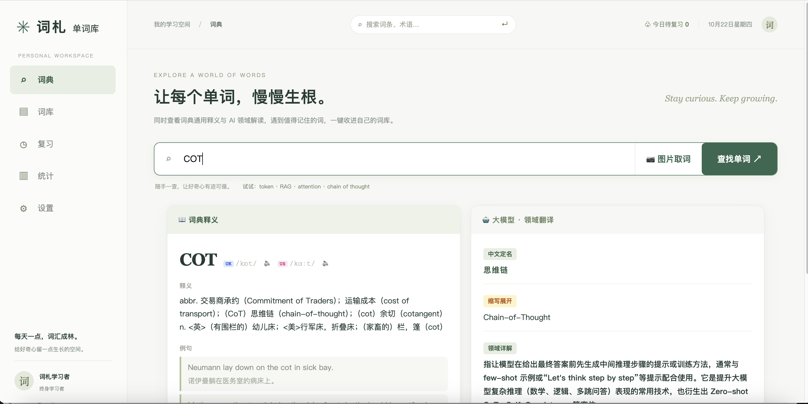

01 / LOOK UP
双源查词
词典释义与大模型领域解读并排呈现，通用含义和专业语境一眼对照。
读 AI 论文、技术文档时遇见的陌生术语，值得被好好理解、认真记下，最后变成你自己的知识。

通用词典可以告诉你 token 是「代币」或「凭证」。但在大模型里，它是文本被拆解、计算与生成的基本单位。词札把词典释义与领域语境放在一起，让每次查词都更接近真正的理解。
模型将输入文本切分为 token，再把它们映射为数字序列。一个 token 可能是一个字、词的一部分，或一个标点符号。
把发现新词的瞬间，接成一条自然、轻松的学习路径。
词典释义与大模型领域解读并排呈现，通用含义和专业语境一眼对照。
把释义、例句和个人笔记收进自己的词库，标签帮你随时找回来。
卡片翻面与三档自评，让恰好的复习节奏替你把新词留在记忆里。
词库保存在自己的设备上。无需账号，数据可导出，备份就是一个文件。
搜索单词、短语，或从截图中提取术语。
比较词典与领域解释，收藏有用的内容。
按间隔复习，在统计中看见自己的积累。
需要 Python 3.10+ 和 Node.js 20.19+。词典无需 API Key；如需领域解读，可接入 OpenAI 兼容模型。
# 克隆项目 git clone https://github.com/ZhiJiu-An/cizha-vocab.git cd cizha-vocab # 安装依赖并启动 ./setup.sh ./start.sh